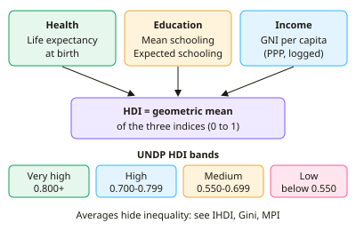

A-level Economics Year 13 · Topic 7
Emerging and developing economies
This topic looks at how emerging and developing economies grow and develop, and the barriers they face.
We will compare measures of development, examine the factors that hold countries back, and look at structural change and urbanisation.
Then we evaluate market based and interventionist strategies, multinationals, aid, debt relief, Fairtrade and sustainable development.
- 8 subtopics
- 432 questions
- Free: 7.1 notes and 10 questions
In this topic
- 7.1Economic growth and development: measures including HDI, GNI per capita (PPP) and other indicatorsFree below · 47 questions
- 7.2Factors influencing growth and development: primary product dependency, savings and foreign currency gaps, demographics, debt, infrastructure and institutionsOpen in Full Marks · 50 questions
- 7.3Structural change, the Lewis model, urbanisation and the informal economyOpen in Full Marks · 67 questions
- 7.4Market-oriented development strategies: trade liberalisation, privatisation and microfinanceOpen in Full Marks · 83 questions
- 7.5Interventionist development strategies: human capital, infrastructure, protectionism, buffer stocks and industrialisationOpen in Full Marks · 70 questions
- 7.6Multinational corporations and foreign direct investment in developing economiesOpen in Full Marks · 30 questions
- 7.7Aid, debt relief, Fairtrade, NGOs and the role of the IMF and World BankOpen in Full Marks · 26 questions
- 7.8Sustainable development and environmental constraints on growthOpen in Full Marks · 59 questions
7.1 · Free notes
Economic growth and development: measures including HDI, GNI per capita (PPP) and other indicators

Key points
- Economic growth is a rise in real GDP (or real GNI) over time. Economic development is a sustained improvement in living standards, health, education and freedoms, so growth is necessary but not sufficient.
- GNI = GDP + net property income from abroad (income received minus income paid abroad). GNI per capita = GNI ÷ population. It matters where profit repatriation or remittances are large.
- PPP (purchasing power parity) adjusts for differences in price levels using the cost of a common basket. PPP rate = local-currency price of basket ÷ US$ price, giving 'international dollars'. It is better than market exchange rates for comparing living standards.
- The UNDP Human Development Index (HDI) has three dimensions: health (life expectancy at birth), education (mean years of schooling for adults and expected years of schooling for children) and income (GNI per capita, PPP).
- Since 2010 the HDI is the geometric mean of three normalised indices, scored 0 to 1. Income is logged because extra income adds less to development as it rises (diminishing marginal returns).
- UNDP bands: very high 0.800 and above, high 0.700–0.799, medium 0.550–0.699, low below 0.550.
- HDI limitations: it ignores inequality (the Inequality-adjusted HDI, IHDI, corrects for this), environmental sustainability, political freedom and gender gaps, and its equal weighting is arbitrary. It also correlates strongly with income.
- GNI per capita limitations: it is an average that hides distribution, ignores informal and subsistence output, ignores environmental damage and non-market work, and PPP estimates are imprecise.
- Evaluation: use a basket of indicators. Oil-rich states often rank much lower on HDI than on income, while Costa Rica and Sri Lanka rank higher on HDI than their income suggests. Always say whether a figure is real or nominal, and per capita or total.
In more detail
- Worked HDI: health index 0.85, education index 0.70 and income index 0.75 → HDI = ∛(0.85 × 0.70 × 0.75) ≈ 0.764, high human development.
- Worked GNI vs GDP: GDP is $50bn, foreign-owned firms send $5bn of profit abroad, and residents earn $1bn abroad → GNI = $46bn.
- Multidimensional Poverty Index: the MPI counts people deprived in health, education and living standards (such as having no electricity or clean water), giving a fuller picture than income alone.
- The poverty line: the World Bank's international extreme poverty line was raised to $3.00 a day (in 2021 PPP terms) in 2025.
Practice
Economic growth and development: measures including HDI, GNI per capita (PPP) and other indicators: 10 questions
Pick an answer to check it, or open the answer for the explanation.
1. Which set of dimensions is used to calculate the UNDP Human Development Index?
- Health, education and income
- Income, employment and environmental quality
- Health, happiness and income
- Income, inequality and political freedom
Show answer
A: Health, education and income. The HDI combines life expectancy (health), schooling (education) and GNI per capita at PPP (income). It does not include happiness, employment, environment or freedom.
2. Since 2010 the HDI has combined its three dimension indices using which method?
- Simple arithmetic mean
- Geometric mean
- Income-weighted sum
- Median of the three indices
Show answer
B: Geometric mean. The UNDP switched to a geometric mean in 2010. This means a low score in one dimension cannot be fully offset by a high score in another.
3. A country's GDP is $50bn. It receives $6bn property income from abroad and pays out $9bn abroad. What is its GNI?
- $65bn
- $47bn
- $41bn
- $53bn
Show answer
B: $47bn. GNI = GDP + net property income from abroad = 50 + (6 − 9) = $47bn.
4. GNI is $120bn and the population is 40 million. What is GNI per capita?
- $30,000
- $4,800
- $3,000
- $300
Show answer
C: $3,000. GNI per capita = 120 000 million ÷ 40 million = $3,000.
5. Why is PPP-adjusted GNI per capita preferred to market exchange rate figures when comparing living standards?
- It removes the effect of inequality
- It adjusts for differences in price levels
- It includes informal and environmental costs
- It adjusts for population growth
Show answer
B: It adjusts for differences in price levels. PPP converts incomes using the cost of a common basket, so it shows what incomes can actually buy. It does not adjust for inequality, the environment or population.
6. A basket costs 600 rupees in India and $15 in the US. GNI per capita is 90,000 rupees. What is this in PPP dollars?
- $13,500
- $6,000
- $1,500
- $2,250
Show answer
D: $2,250. The PPP rate is 600 ÷ 15 = 40 rupees per $. 90,000 ÷ 40 = $2,250.
7. A country has an HDI of 0.690. In which UNDP category does it fall?
- Low
- Medium
- High
- Very high
Show answer
B: Medium. UNDP 'medium' human development covers 0.550 to 0.699. High starts at 0.700.
8. Why does the HDI use the logarithm of GNI per capita?
- Extra income adds less to development as it rises
- It makes income count more at high levels
- It removes the effect of inequality
- It converts income into PPP dollars
Show answer
A: Extra income adds less to development as it rises. The log reflects diminishing returns: an extra $1,000 improves human development more for a poor country than a rich one. PPP and inequality are separate issues.
9. Which is a key limitation of the standard HDI?
- It excludes health data
- It ignores distribution within a country
- It uses subjective happiness surveys
- It measures only national income
Show answer
B: It ignores distribution within a country. The standard HDI uses national averages, so it hides inequality. The IHDI was designed to adjust for this. It does include health and is not survey-based on happiness.
10. The Multidimensional Poverty Index differs from a dollar-a-day poverty line because it measures…
- Average income per head
- Relative income inequality
- Only income below a threshold
- Deprivations in health, education and living standards
Show answer
D: Deprivations in health, education and living standards. The MPI counts households' overlapping deprivations (e.g. nutrition, schooling, sanitation) rather than just income.
Keep going in Full Marks
Full Marks has 47 questions on Economic growth and development: measures including HDI, GNI per capita (PPP) and other indicators (37 more than here), set out in practice levels. You also get notes and 3D models for all 8 subtopics of Emerging and developing economies, plus games, timed exams and past papers.